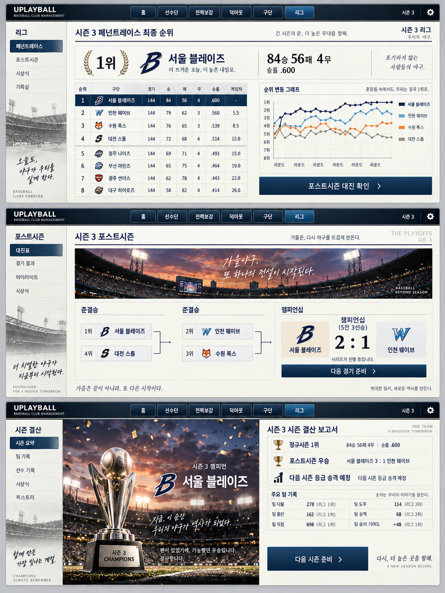

정규시즌과 승강은 존재
라운드 단위 진행, 전체 조 정규시즌 완료, 순위 기반 승강과 다음 시즌 재추첨이 구현되어 있다. 기존 결과를 연출의 정본으로 삼는다.
페넌트레이스의 성취, 포스트시즌의 긴장,
시즌 결산의 납득을 하나의 흐름으로 연결한다.
라운드 단위 진행, 전체 조 정규시즌 완료, 순위 기반 승강과 다음 시즌 재추첨이 구현되어 있다. 기존 결과를 연출의 정본으로 삼는다.
커리어에는 4강 토너먼트가 있지만 구단주 시즌 마감 경로에는 연결되어 있지 않다. 포스트시즌을 표지만 추가할 수는 없다.
회백색 업무 면, 얇은 청회색 선, 검정·은색 상태 바, 작은 네이비 버튼. 기존 SharedGameShell과 Owner 전용 스킨을 유지한다.
| 근거 | 현행 상태 | 기획에 반영 |
|---|---|---|
| OwnerLeagueAllocationResolver | 승률 → 득실차 → 영속 ID 순위 | 포스트시즌 시드는 동일 최종 순위를 그대로 소비. 커리어의 상대전적 우선 정렬을 적용하지 않음. |
| OwnerLeagueWorldService | 전체 조 순위 확정 후 승강·재추첨. 소수 조와 단일 진입 구단 예외 존재 | 정규시즌 화면은 ‘승격권’, 결산은 계획 결과에 따른 ‘승격 예정’, 다음 시즌 반영 후 ‘승격 완료’로 구분. |
| ManagerModeCoordinator.AdvanceSeason | 계약·급여 검증과 시즌 교체를 한 명령에서 처리 | 미리보기 Query와 확정 Command를 분리하고, 결산 자료를 시즌 교체 전에 보존. |
| OwnerSeasonRecordsService / PresentationModel | 현재·완료 시즌의 선수 리더보드 조회 가능 | 규정 충족 기록만 인용. ‘기록 선두’와 신규 ‘공식 수상’을 구분. |
미진출·탈락 팀은 남은 AI 포스트시즌을 공통 엔진으로 처리한 뒤 결산한다. ‘남은 결과 확인’은 관전을 생략하는 동작이며 계산이나 정산을 생략하지 않는다.
장면과 결과를 바꾸면 주요 문구·다음 행동이 바뀐다. 이 미리보기는 예시 Snapshot을 표시하며 시뮬레이션이나 경제 상태를 변경하지 않는다.
월드리그 10팀 조 예시: 1~4위 승격권, 9~10위 강등권. 실제 표시에는 현재 Balance와 최종 월드 편성 Query를 사용한다. 포스트시즌 화면은 우승 분기에서 결승 4차전 직전, 결산 화면은 최종 3승 1패로 설정했다.
평소에는 밝고 조밀한 정보 UI를 유지한다. 정규시즌 마감은 작은 페넌트와 순위, 포스트시즌은 대진 연결선과 구장 띠 이미지, 우승 결산은 트로피와 조명으로 강조한다.
우승 장면은 짧은 전면 연출을 허용한다. 준우승·탈락·강등에서는 색종이와 승리 음악을 사용하지 않고, 결과와 다음 행동을 먼저 보여준다.

내장 ImageGen 사용 · 최종 생성·수정 프롬프트 · 확인한 기존 덕아웃 화면 · 기존 공용 Shell을 바꾸거나 이미지 전체를 게임 화면으로 붙이지 않는다.
아래 시간은 제안 기본값이며 Presentation 설정이 소유한다. 결과만 보기·동작 줄이기에서는 이동·카운트업을 생략하고 정적인 결과를 즉시 표시한다.
| 장면 / 트리거 | 보여줄 내용 | 시간·음향·입력 | 완료 후 |
|---|---|---|---|
| 시즌 개막 다음 시즌 확정 성공 | 시즌 번호, 등급·조, 새 상대 목록, 현재 승강 규칙. 이전 시즌 성과는 한 줄로 표시. | 총 2초: 구단명 0.4초 → 새 조 0.8초 → 행동 0.8초. 짧은 개막 음악. 즉시 건너뛰기. | 첫 경기 준비. 이후 홈에서 개막 안내 재조회. |
| 페넌트레이스 중 같은 라운드 결과 확정 | 내 구단 순위 변화·잔여 경기·다음 상대. PS 진출권과 승강권은 다른 배지. 최종 확정 전 ‘현재 진출권’. | 비차단 Strip 1.5초. 같은 라운드 여러 변화는 1건 요약. 일반 순위 변동은 음악 없음. | 현재 업무 유지. 자동 진행을 매 라운드 멈추지 않음. |
| 정규시즌 종료 모든 조 완료 후 Snapshot 확정 | 최종 순위·승패무·승률, 해당 조 순위, PS 시드, 승강권 및 동률 판정 근거. | 총 2.5초: 표 0.3초 → 내 행 0.7초 → 결과 0.8초 → CTA 0.7초. 정규 1위만 짧은 팡파르. 클릭/Enter로 즉시 완성. | 진출: 대진 확인. 미진출: 남은 포스트시즌 결과 확인. 정규 1위와 최종 우승을 구분. |
| 포스트시즌 개막 대진 고정 | 1–4 / 2–3 준결승, 3전 2선승 / 결승 5전 3선승, 홈·원정, 시리즈 전적. | 총 2초. 양 준결승 노드 동시 공개 후 결승 연결. 낮은 타악 리듬, 반복 진입 때 무음·정적. | 다음 경기 준비. 상대 분석·라인업·전술카드 기존 화면으로 연결. |
| 시리즈 경기 종료 Match 결과 공개 완료 | 공식 점수 → 시리즈 승수 → 다음 경기/시리즈 승리. 마지막 경기 결과보다 우승 문구가 먼저 나오지 않음. | 1.2초의 승수 전환. 시리즈 종료는 2초. 기존 경기 결과 음향과 중복 재생하지 않음. | 진행: 다음 경기. 결승 진출: 결승 대진. 탈락: 남은 결과 확인. |
| 최종 우승 / 준우승 결승 확정 결과 공개 | 우승은 조·등급·시즌을 명시한 트로피. 준우승은 구단과 시리즈 최종 전적. 마지막 확정 경기 링크. | 우승 최대 5초: 구장 0.5 → 트로피 1 → 구단·전적 1 → 유지 2.5초. 준우승 2초. ESC는 즉시 결과 완성, 다음 ESC는 닫기. | 시즌 결산. ‘승격’ 축하를 자동 병합하지 않음. |
| 시즌 결산 내 조 PS 종료, 전체 결과 확정 | 정규 순위 / PS 결과 / 다음 등급, 팀 기록, 기록 선두, 재정·계약, 다음 행동. 이전 시즌 대비는 이력 있을 때만. | 1초 안에 요약 표시. 통계 숫자는 고정값으로 표시. 업무 확인은 자동으로 넘기지 않음. | 계약·재정 확인 → 시즌 전환 미리보기 → 확정 → 다음 시즌 개막. |
개별 경기·핵심 관전·결과만 보기·정규시즌 일괄 진행은 같은 확정 결과를 소비한다. 일괄 진행 중 작은 순위 알림은 요약하고 정규시즌 종료에서 멈춘다.
이미 계산된 우승·시즌 기록은 마지막 경기 결과를 사용자가 확인하기 전까지 홈·알림·헤더에서 공개하지 않는다. 연출 Skip은 결과 공개를 완료할 뿐 경기나 급여 Command를 재호출하지 않는다.
처음에는 전체 연출, 다시 열 때는 정적인 보고서. 음악은 설정 볼륨을 따르고 UI 안내와 가이드는 연출 종료 후 재개한다.
키보드 포커스는 건너뛰기 → 주 행동 순서. 색뿐 아니라 ‘우승·탈락·승격권’ 텍스트를 사용한다. 1280×720에서 주 행동을 고정하고 표 본문만 스크롤한다.
SelectSeeds를 그대로 호출하지 않는다.포스트시즌 시작 이후 해당 시즌 종료까지 1군 등록·트레이드는 잠근다. 현재 25인 내 타순·수비 배치, 덕아웃 방침, 보유 전술 준비는 기존 권한으로 허용한다. 계약 연장은 허용한다. 별도 실시간 교체 명령은 신설하지 않는다. 잠금은 UI 표시와 Game 검증 양쪽에서 같은 사유를 반환해야 한다.
| 보고서 영역 | 필수 데이터 | 플레이어가 가져갈 판단 |
|---|---|---|
| 시즌 성과 | 정규시즌 최종 순위·승패무 / PS 단계·시리즈 전적 / 다음 등급과 변경 사유 | ‘4위로 승격권을 확보했지만 준결승에서 탈락했다.’ 두 결과를 독립적으로 이해. |
| 팀 기록 | 정규시즌 득점·실점·득실차·팀 타율·ERA 및 리그 순위. PS 기록은 별도 보기. | 실점이 많았는지, 득점이 부족했는지 확인. 시즌 합계만으로 특정 전술을 패인이라 단정하지 않음. |
| 선수 기록 | 기존 리더보드 규정 충족 선두·우리 선수 강조·기록 상세 링크 | 누가 기여했는지 확인. 별도 MVP 선정식이 없으면 MVP·골든글러브 수상을 발명하지 않음. |
| 구단 운영 | 실제 시즌 수입·지출, 지급 예정 선수/스태프 급여, 현금, 만료 임박 계약 수 | ‘시즌 종료 잔액’과 ‘급여 지급 후 예상 잔액’을 구분. 지급 성공 뒤에만 확정 정산으로 표시. |
| 다음 행동 | 현재 Query가 반환한 차단 사유와 기존 업무 Route | 계약 갱신 / 재정 확인 / 선수단 검토 중 필요한 곳으로 이동. 재진입하면 같은 결산 페이지 복원. |
예시 문구: “팀 ERA 리그 8위. 투수진 기록을 확인하세요.”는 관측 사실에 기반한다. “투수 교체가 늦어 시즌을 망쳤습니다.”처럼 실행 기록과 비교 근거가 없는 인과 설명은 사용하지 않는다. 팀컬러 효과 역시 해당 경기 입력으로 검증된 값만 상세에 표시한다.
아래 이름 중 ‘신규 제안’은 아직 프로젝트에 존재하지 않는 설계다. Core/Simulation의 Unity 비의존성과 경기·표현 분리를 유지한다.
| 레이어 | 기존 연결점 | 추가할 책임 |
|---|---|---|
| Core / Simulation | OwnerLeagueAllocationResolver, PostseasonBracket, DetailedMatchEngine | 신규 제안 OwnerPostseasonRules. Owner 시드 입력을 받는 조별 시리즈 규칙. 같은 입력·Seed에 같은 대진·결과. |
| Game | ManagerLiveSeasonState, ManagerModeMatchService, OwnerLeagueWorldState | 신규 제안 OwnerPostseasonState / OwnerPostseasonService. 단계·조·시드·시리즈·GameId·휴식·기록·완료 여부 소유. MatchService의 공통 경기 실행/정산 부분에 PS 일정 공급. |
| Game / 시즌 마감 | ManagerModeCoordinator.AdvanceSeason, ManagerCompletedSeasonState | 신규 제안 OwnerSeasonReviewSnapshot 및 전환 Preview. PS 완료 Guard, 버전 검증, 급여·계약·이월의 단일 Commit. 실패 시 결과·원장·시즌을 유지. |
| Game.Unity | OwnerModeManager.SeasonSimulation, RuntimeChanged | 확정 사건 알림과 취소 가능한 PS 진행 세션. Presentation이 시리즈 승패나 완료 여부를 결정하지 않음. |
| Presentation | OwnerModeShellCoordinator, OwnerLeaguePresentationModel, OwnerSeasonRecordsPresentationModel | 신규 제안 OwnerSeasonPresentationCoordinator, UI_Popup_OwnerSeasonMilestone, UI_Scene_OwnerSeasonReview. 조회·공개·재방문 상태와 연출만 담당. |
SeasonId + GroupId + EventType + SeriesId/GameId. 확인·Skip은 공개 이력만 변경하며 보상·급여를 지급하지 않는다.Global 메뉴는 추가하지 않는다. 기존 Shared.League.Standings 작업면 안에 정규시즌/포스트시즌 Selector를 두고, Shared.League.RankHistory의 기존 순위 흐름을 연결한다. 시즌 결산은 Owner 전용 Local 화면 ‘시즌 결산’ 1개를 제안하며 역사 기록의 시즌 선택에서도 연다.
PS는 전역·로컬 Route를 추가하지 않는 화면 내부 보기다. 경기 준비/Match Center는 원래 화면과 선택 시즌을 보존한다. 계약·재정 화면으로 이동했다 돌아오면 Snapshot 버전을 비교해 Preview만 갱신한다.
시즌 마감 버튼은 Preview의 시즌·상태 버전을 Command에서 재검증한다. 클릭 중 중복 입력을 막고, 오래된 Preview는 재조회한다. 재조회 실패를 성공 연출로 덮지 않는다.
| 상황 | 화면과 행동 | 보존할 계약 |
|---|---|---|
| 우리 팀만 정규시즌 종료 | ‘다른 조 경기 정리 중’ 진행 상태. 마지막 확정 라운드와 중지 동작 표시. | 전체 조 완료 전에 승강 확정·시즌 교체하지 않음. |
| 진출 실패 / 조기 탈락 | 과장된 실패 연출 없이 우리 성적 확인. ‘남은 결과 확인’으로 AI 일정 진행, 선택 관전 가능. | PS 우승 구단과 전체 일정 완료까지 확정한 뒤 결산. |
| 승격 대상이 새 등급에 한 팀뿐 | ‘승격권 확보 · 상대 구단 부족으로 잔류’ 사유 표시. | PlanNextSeason 최종 배정 결과 우선. 포스트시즌 우승으로 예외를 우회하지 않음. |
| 계약 갱신 필요 / 돈 부족 | 결산은 열람 가능. ‘계약 확인’ / ‘재정 확인’ 활성화, 시즌 확정은 사유와 함께 비활성. | 기존 ContractRenewalRequired / InsufficientMoney 유지. 결산을 다시 열어도 급여 중복 차감 없음. |
| 빈 기록 / 이전 시즌 없음 | ‘규정 충족 선수 없음’ / 전년 비교 영역 생략. | 0으로 채워 감소율을 발명하지 않음. PS와 정규 기록 혼합 금지. |
| 아트 로드 실패 / 동작 줄이기 | 기본 회백색 패널 + 텍스트 결과. 애니메이션 없이 주 행동 활성. | 아트나 소리가 경기·정산 진행의 선행 조건이 아님. |
| 중복 클릭 / 로드 / 화면 왕복 | 진행 중 입력 차단, 같은 시즌 보고서 재조회. 오류는 재시도와 복귀 제공. | GameId 결과, 단계 이동, 급여 정산은 각각 멱등성 검증. |
Owner 단계·시드·시리즈·PS 기록 및 저장 이행을 구현한다. 공통 경기 입력·Commit을 연결하고 결산 Snapshot과 전환 Preview를 확보한다.
게이트: 모든 조 완료, 2·3·4·10팀 대진, 같은 Seed 재실행, 저장/로드, 급여·기록 중복 방지.
정규 마감 → 대진 → 시리즈 결과 → 결산 → 계약/재정 해결 → 다음 개막을 Native UI로 연결한다. 먼저 정적 결과·Skip·복귀를 완성한다.
게이트: 우승·준우승·탈락·미진출·강등·단독 승격 후보 잔류의 Production 경로 검증.
구장·트로피 장식, 짧은 전환·음향·순위 강조를 적용한다. 실제 3해상도에서 표·한글·포커스·주 행동을 확인한다.
게이트: 1280×720 / 1920×1080 / 2560×1440, 동작 줄이기, 결과만 보기, 반복 시즌.
2026-09-08 작업 트리 기준. 기존 사용자 변경·삭제 파일은 수정하지 않았다. 기준 문서가 가리키는 docs/todo/역사시뮬레이션_구단주모드 디렉터리는 현재 작업 트리에 없어, 현재 기준 문서와 실제 코드로 확인했다.
사용성 검토에서 드러난 흰 빈 패널, 낮은 제목 대비, 비활성처럼 보이는 탭을 폐기했다. 아래 시안과 Unity 구현은 같은 정보 구조를 사용한다.
우리 조 결과 확정 · 다른 리그 결과 마감 필요
준결승 | KIA 타이거즈 0 : 2 KT 위즈
준결승 | LG 트윈스 2 : 1 두산 베어스
챔피언십 | LG 트윈스 3 : 1 KT 위즈
확정된 경기·순위만 기록에 반영됩니다.
{kind=link}